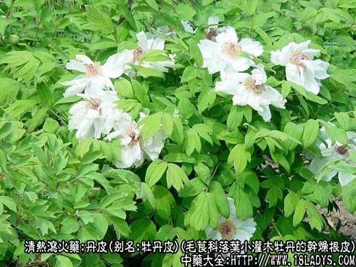
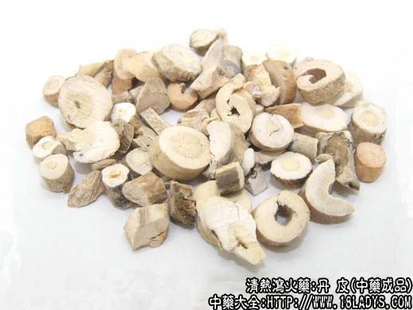
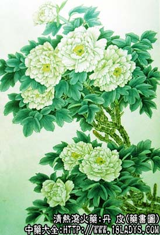

丹皮为常用中药，《神农本草经》列为中品。
别名：牡丹皮，粉丹皮。
来源：为毛莨科落叶小灌木牡丹的干燥根皮。栽培或野生。
产地：主产于安徽省的铜陵、凤凰山、南陵等地，湖南邵阳、祁东、邵东等县，四川垫江、灌县。此外河南、山东、甘肃、陕西、湖北、西藏等地均有生产。
概述：人工栽培丹皮，目前产地有几种规格，如连丹皮、刮丹皮、细丹皮、骨丹皮等。野生品不分规格统称川丹皮。
性状鉴别：1、连丹皮。呈圆筒状，稍弯曲，长3～17厘米，直径约0.5～1厘米，厚约0.2～0.3厘米。外表皮棕褐色或灰褐色。上面有一条纵形裂缝（是抽心时的刀痕），并带有不规则的略凸的横长皮孔及须根痕。 栓皮脱落处呈粉棕色。内表面淡棕色或灰黄色，显细纵纹理，并有白色小亮星（丹皮酚）。折断面粉白色，显粉质。有特殊香气，味微苦酸涩稍有麻舌感。产于是安徽省凤凰山区的连丹皮，皮细肉厚，条干圆直粗壮，两端剪平切齐，纵 形刀痕紧闭，外皮褐色，内碴白色，气清香，习惯认为是最优品种，习称凤丹皮，多供出口外销，现市场少见。
2、刮丹皮。是选与连丹皮规格相同的鲜丹皮用竹刀或瓷片括去外表皮的一种规格。表皮淡棕色，在节疤皮孔根痕处常有未去尽的栓皮，形成棕褐色花斑。余同连丹皮。
3、细丹皮。是选过连丹皮之后，下余较细的丹皮。直径在0.5厘米以下，长短不一，约3～15厘米，余同连丹皮。骨丹皮是细丹皮未抽去木心者。
4、川丹皮。分栽培和野生两种。栽培品产于垫江，灌县等地。其原植物及商品性状，均与上列三种相同，但野生丹皮，则有保氏牡丹，野牡丹、四川牡丹、黄花牡丹、川赤芍等多种植物的根皮。其主要特点，都是小灌木，而不是草 本（芍药是草本）。由于生长年限不同，品种不一，因而剥下的丹皮，粗细不等，多呈不规则的片块状或卷筒状。一般皮层较薄，刀口处两边向内卷曲，但不紧闭。外表棕褐色，表皮脱落下呈污黄色或黄绿色，内表皮黄白色或紫色，有 的带棱槽或残留粉质粘连的木心。断裂处多显淡紫色，无或少白色小亮星。亦有香气，味苦涩，带有杏仁味。此外，西藏地区的野生丹皮，也列入川丹皮之中，但皮层较川丹皮稍厚而整齐，并有白色小亮星。
以条粗长，无木心及须根，皮厚，断面粉白色，香气浓，附有亮银星者为佳。
主要成分：含丹皮酚（即芍药醇）、牡丹皮原甙、苯甲酸、植物甾醇、鞣质等。
功效与作用：1、抗菌。体外试验丹皮对伤寒杆菌、大肠杆菌、金黄色葡萄球菌、溶血性链球菌、肺炎球菌等有较强的抗菌作用。对白喉杆菌也有抑制作用。
2、降压。丹皮水煎剂有降血压作用，与所含的丹皮酚及其糖甙有关。
此外，还观察到丹皮有活血通经作用。
炮制：切片生用，或炒炭。
性味：苦、辛、寒。
归经：入心、肝、肾经。
功能：清热凉血，活血散瘀。
主治：斑疹吐衄，血滞经闭，经前发热，痈肿疮毒，损伤瘀血、阴虚发热、无汗滑蒸。
临床应用：主要用于清泻肝火和凉血消瘀（消炎、降压）。
1、用于治疗肝郁火旺而致的发热（下午较甚）、盗汗或自汗、头痛目涩、颊赤口干、月经不调（包括某些类型的慢性肝炎、月经不调）。常配栀子 、柴胡等，方如丹栀逍遥散（丹皮与栀子配合，能增强清肝热的作用）。
2、用于治疗肠痈（急性阑尾炎）。取其有泻热消瘀（消炎）的作用，须配大黄、金银花等，方如大黄牡丹汤加减，治单纯性阑尾炎。
3、用于治疗高血压和动脉硬化而有肝郁积热症状者，包括眼底动脉硬化、血管痉挛、眼底出血等。可用丹皮配野菊花、石决明等降压，方如丹皮野菊汤。
4、用于治疗阴虚发热。可配青蒿、鳖甲（青蒿鳖甲汤）；或 配地黄、山萸肉（如六味地黄汤）；或配四物汤（如丹栀四物汤 ，治妇女虚热尤好）。
5、用于治疗热症出血。在温热病时，助犀角、生地以凉血 止血。一般血热秘致的衄血、吐血，也常用丹皮。丹皮煅炭，止血作用更好，故上灰散用之。
6、用于治疗跌打瘀血。胸、腹部挫伤后有瘀血停留作痛者，在理血方剂内常加丹皮、赤芍等以凉血去瘀。
使用注意：1、丹皮与桂枝都能通血脉中壅滞（即改善局部血液循环），但丹皮性寒，适于热症；桂枝性温，适于寒症。在妇科杂病中，两者有时也配合应用，可加强活血去瘀，如桂枝茯苓丸（桂枝、茯苓、丹皮、 桃仁、赤芍）治盆腔炎；温经汤（桂枝、丹皮、当归、白芍、川芎、党参、半夏、麦冬、吴茱萸、阿胶、生姜、甘草、红枣）治月经不调。
2、脾胃虚寒而有泄泻者，以及月经过多者都不宜用。
用量：6～9g。
处方举例：1、丹栀逍遥散（《内科摘要》）：丹皮6g，山栀6g，柴胡9g，当归12g，白芍9g，白术9g，茯苓9g，炙甘草3g，薄荷3g（后下）、生姜1片，水煎服。
2、大黄牡丹汤加减：大黄9g（后下）、丹皮15g，冬瓜仁30g，桃仁9g，银花30g，连翘15g，生苡仁30g，生甘草6g，水煎服。
3、丹皮野菊汤：丹皮6g，野菊花9g，银花藤18g，鸡血藤18g，石决明30g，佩兰9g，水煎服。
4、丹栀四物汤：丹皮6g，栀子6g，当归9g，熟地12g，白芍9g，川芎6g，水煎服。